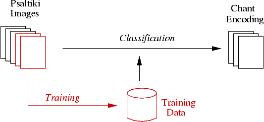
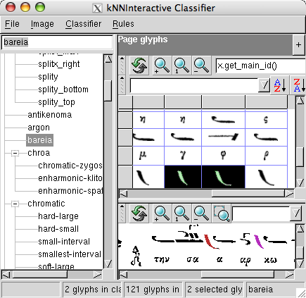
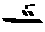
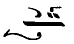
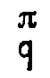

Last modified: March 06, 2007
Contents
This documentation is for those, who want to use the toolkit for psaltiki recognition, but are not interested in extending its capabilities. If you want to write custom recognition scripts, see the developer's manual.
As each historic psaltiki print uses different neume symbols, you must first train the system with some pages of music and then use this training data for subsequent recognition:
Hence the proper use of this toolkit requires two steps:
The recognition assumes that the page layout is in a single column. If you have scanned in to adjacent pages into a single image, resulting in a two column layout, you must first split the image into two.
As automatic lyrics removal is not yet imlemented, you must currently also remove the lyrics from the image. this is however necessary only for the recognition step, but not strictly for the training step, because you can simply ignore all lyrics during training.
The training dialog is started from the Gamera GUI:
Gamera will prompt you for an image file and the following additional parameter:

- an optional training database file (in .xml format). For the first page this will be left empty; for the following pages of the same print it will be the file containing the traing data of the previous pages.
- on optional file containing all symbol names, one symbol name per line. When empty, a default symbol table is used.
- preprocessing options as described in the next section.
After pressing Ok, the training GUI shown above will appear that is described in detail in the Gamera training tutorial. See the section Symbol Names for details about the neume naming conventions and how to train uninteresting stuff. When you have trained the loaded page, save the training data with File/Classifier glyphs/Save glyphs in classifier... in an .xml file.
Note
Do not train lyrics, but only neumes. There is currently no support for lyrics recognition in the toolkit.
Common image defects like black speckles, small white holes, black copy borders or rotation can be improved with the preprocessing routines smooth, remove_copy_border and correct_rotation. In particular the smooth plugin does not necessarily improve the image quality, because its filling of white holes can inadvertantly join separate neumes.
Thus you should always test the optimal preprocessing options for each print, which can be done by loading the image into the Gamera GUI, converting it to Onebit (Conversion/to_onebit in the image right click menu) and starting the preprocessing plugins from the Psaltiki/Preprocessing right click menu.
Note
Whatever your choice of preprocessing routines is, make sure you use the same preprocessing for both training and recognition.
The toolkit allows for arbitrary neume names. This leads however to the problem how the recognition system can identify certain neumes that are crucial for the semantic interpretation. To solve this paradoxon, we require that the symbol names consist of period delimited strings, as in
primary.baseline.oligon
When any of these strings is one of a set of predefined keywords, the neume has the meaning given in the table below. You are free to add more modifiers that might be helpful for furhtor custom postprocessing of the output code.
| Keyword | Meaning | Comment |
|---|---|---|
| primary | neume can be primary | removed in output code except for one per group |
| baseline | neume defines the baseline (typically ison and oligon) | removed in output code (see below) |
| linking | a linking neume that can span more than one neume group | |
| secondaryright | a secondary neume that always belongs to the group to its right when it appears on the baseline (normally isolated secondary neumes on the baseline are attached to the group to their left) | removed in output code |
| martyria | a martyria scale neume | |
| martyria-fthora | a neume that is a fthora when overlapping with a primary neume and a martyria when no primary neume is above it | when fthora, removed in output code; when martyria, replaced with martyria |
| chronos | a chronos neume (chi) | |
| dot | a dot (hapli or stigmi) | |
| gorgon | neume is a gorgon variant | |
| trash | symbol is completely ignored | useful for speckles or or other image defects |
The keyword baseline is only necessary when you are using a training based baseline detection (option -tb of psaltiki_recognize.py). On the other hand it does no harm in other baseline detection methods, so you can train it anyway.
Gamera allows the training of symbols that are broken into more than one component due to printing defects. It requires that you mark the respective parts with a rectangle in the image view of the training GUI and classify them with the prefix _group. followed by the regular symbol name. See the Gamera training tutorial for details.
Note
Training of broken symbols is generally not necessary, when there are still enough non broken versions of the same symbol in the training images.
Theoretically the method for training broken symbols is also applicable to symbols purposely broken like the kendimata combination consisting of two kendimas. This requires however that the combination is always very similar, a condition rarely fulfilled in psaltiki prints. Moreover the direkt training of neume groups slows down the training process considerably.
Hence the toolkit offers a different way for identifying neume combinations, that is applied after the recognition of the individual neumes. It is controled by a simple text file (provided by the user) consisting of lines of the following form:
neume1,neume2,dist: neume3
This means that the adjacent neumes neume1 and neume2 following each other in the horizontal direction with a bounding box distance of at most dist oligon_heights are to be replaced with the single symbol neume3. This file needs to be given to psaltiki_recogize.py with the option -g.
When you are using the default symbol table, the file will typically look like:
kendima,kendima,1.0: primary.kendimata secondaryright.bareia,hapli,2.0: primary.leima-chronou primary.apostrophos,primary.elaphron,1.2: primary.syneches-elphron
The recognition is not done interactively, but from the command line (shell, DOS prompt) with the command psaltiki_recognize.py. This allows for processing a whole batch of images without user interactions.
Before you can use psaltiki_recognize.py, make sure that it can be found by your shell with the following command:
psaltiki_recognize.py -?
If you get a "command not found" error you must add the directory into which psaltiki_recognize.py has been installed to your PATH environment variable (replace 2.3 with your actual python version, if necessary):
- on Windows this is the Scripts subdirectory of your python install directory, e.g. D:\Python23\Scripts
- on MacOS X it is /System/Library/Frameworks/Python.framework/Versions/2.3/bin
psaltiki_recognize takes a psaltiki image and a training data file as input and creates an encoding of the chant as output. For a full list of possible command line options with an explanation, call psaltiki_recognize -?.
Here is a description of the most important options:
The output file written by psaltiki_recognize.py is a human readable text file where each line represents a line of neume groups in the input image. The neume groups are encoded as follows:
- Groups are enclosed in parentheses.
- Neumes within a group are separated by semicolons.
- Neume groups are separated by spaces.
- Neume names are kept as they are trained, except for the keywords baseline and primary which are chopped off.
- When a group contains a primary neume, it is marked with the prefix primary. (including the final period). Martyria and chronos groups are identifiable as groups containing martyria scale or chronos neumes; their prefixes (martyria. or chronos) are kept in the output.
- Coordinates are appended to the neume name in square brackets [x,y]
The neume coordinates are not absolute coordinates on the entire page but with respect to the primary (or martyria or chronos) neume of each group in the following coordinate system:
- y = 0 on the baseline, x = 0 at the right edge of the primary neume bounding box
- the grid unit size is the Oligon height
- the given coordinate is the position of the lower right edge of the neume bounding box, except for Gorgons, where the leftmost lower edge is used. Note that this results in mostly negative x-coordinates.
Here are some examples for the output code of single neume groups:
| Image of Neume Group | Output Code |
|  | (primary.oligon[0,0];kendimata[-3,2];gorgon.mono-gorgon[-5,3]) |
|  | (primary.oligon[0,0];linking.heteron[-5,-3];apostrophos[-6,2]; kendimata[-2,2];gorgon.mono-gorgon[-4,4]) |
|  | (martyria.diatonic-hemi-phi[0,-6];letter.small.pa[0,0]) |
There are two options to cross check the recognition visually for debugging or evaluation purposes:
- debug images written by psaltiki_recognize.py
- an interactive session with the Gamera GUI
With the option -debug 2, psaltiki_recognize.py writes the following images to the current working directory:
Both baseline detection and the measurement of the characteristic dimensions can be visualized from the Gamera GUI as follows:
- import the Psaltiki toolkit with Toolkits/psaltiki/Import 'psaltiki' toolkit
- load an image file, convert it to onebit with Conversion/to_onebit and optionally apply some preprocessing methods from the Psaltiki right click menu
- right click on the image icon and select Psaltiki/Create_PsaltikiPage
From the right click menu you can inspect the characteristic dimensions and the baselines.